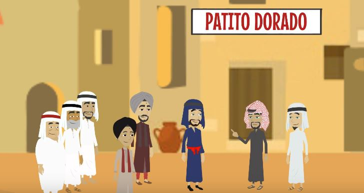
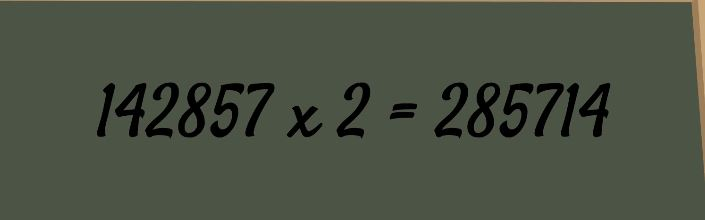
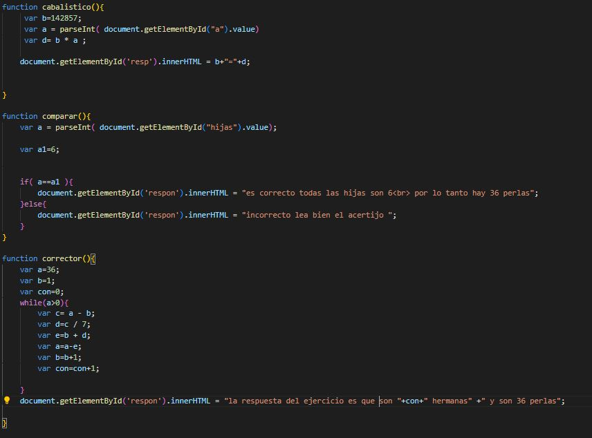
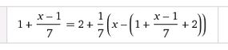

EJERCICIOS DEL HOMBRE QUE CALCULABA Y MAQUINA AL AZAR
LAS PERLAS DEL RAJA ,NUMERO CABALISTICO (resumen)
La mañana siguiente, los amigos, Beremiz y el bagdadí, recibieron una visita imprevista del príncipe Cluzir Schaquer, éste fue a visitarlo para que el
calculista aceptará ser su secretario o director del observatorio, no obstante Beremiz, se vio forzado a rechazar la propuesta de trabajo, ya que estaba
comprometido a darle clases de matemáticas a la hija de su apreciado amigo Lezid, Telassim.
Así que el príncipe, le solicitó ayuda para solventar el problema de las perlas.El príncipe procedió a explicárselo:
un hombre le heredó a sus hijas un número determinado de perlas. La hija mayor le quedaría 1 y 1/7 perlas, la hija del medio 2 y 1/7 perlas de las que
quedasen, y la tercera hija 3 y 1/7 perlas de las que quedasen y así sucesivamente. El planteamiento era ¿Cuantas hijas y cuantas perlas había?

¿cuantas hijas hay?
>
NUMERO CABALISTICO
Observando las paredes el príncipe queda intrigado porque hay una cifra escrita varias veces. Le pregunta a Beremiz qué puede
significar esto. Beremiz le indica que el 142.857 cifra que está en la pared escrita es el número más interesante en la ciencia de las matemáticas. Por la razón, que si se multiplica por 2 el resultado es 285.714. Si se dan cuenta en el
resultado están los mismos números de origen en otro orden. Si se multiplica por los números siguientes hasta el 9 da como resultado la cifra en diferente orden

introduzca por cuanto quiere multiplicar el numero cabalistico hasta el noveno y vera que el resultado ronda sobre los mismos numeros
codigo javascript

como resolverlo
la forma de resolverlo es encontrando en primer lugar cuantas perlas hay eso se hace con una formula

para encontrar el valor de x una vez habiendo esto se puede saber cuantas hermanas hay